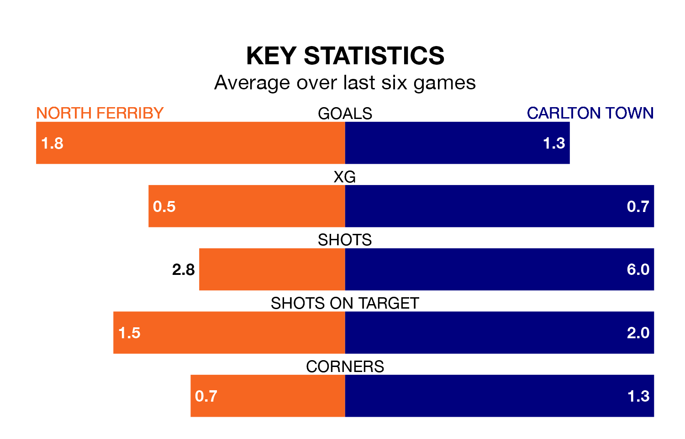

Carlton Town travel to North Ferriby on Saturday in the Northern Premier League Division One East.
The visitors come into the game on the back of a defeat in their last match, having lost to Grimsby Borough 2-1 at home.
North Ferriby, meanwhile, won their last match, 3-1 against Bridlington Town.
With 33 goals in 18 games so far this season, North Ferriby are scoring more than average in the league with 1.8 goals per game. But they are conceding more than average too, letting in 36 goals at a rate of 2.0 per game.
Carlton, meanwhile, are below average scorers, with 1.4 goals per game, compared to a league average of 1.6. They have conceded 1.3 goals per game.
Town are seventh in the table after 18 games, of which they have won 11 and lost seven, earning 33 points.
The home side are one place behind the visitors in eighth, with nine wins and two draws putting them on 29 points.
North Ferriby are in mixed form in the Northern Premier League Division One East, with two wins and a draw from their last six games.
With three wins and three losses over that period, Carlton's form is slightly better – they have taken nine points from 18, compared to North Ferriby's seven.
Updated: 10:36, 03/01/24